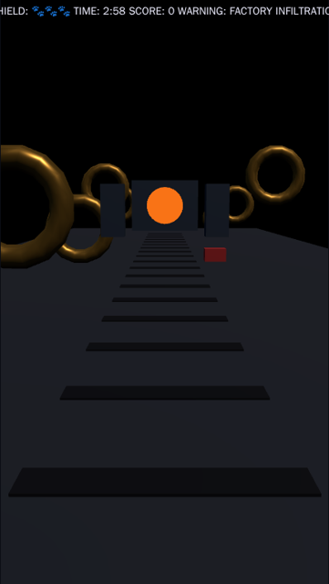
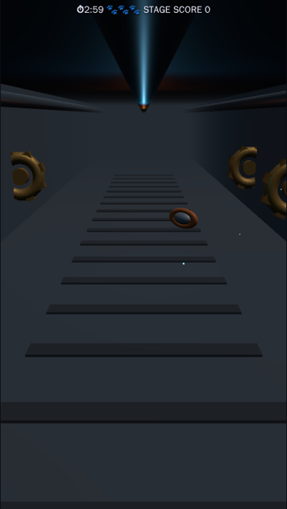
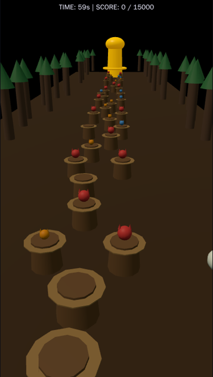
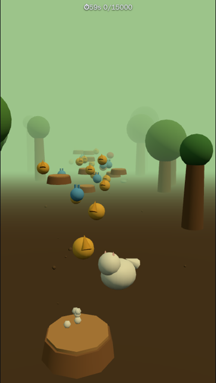
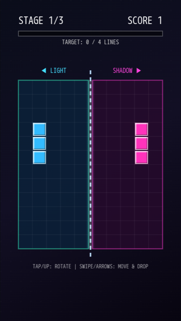
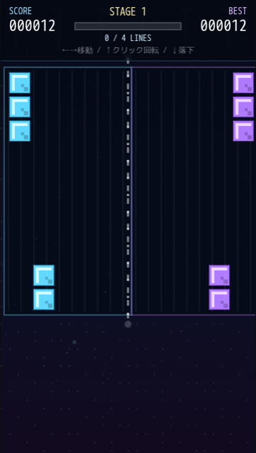
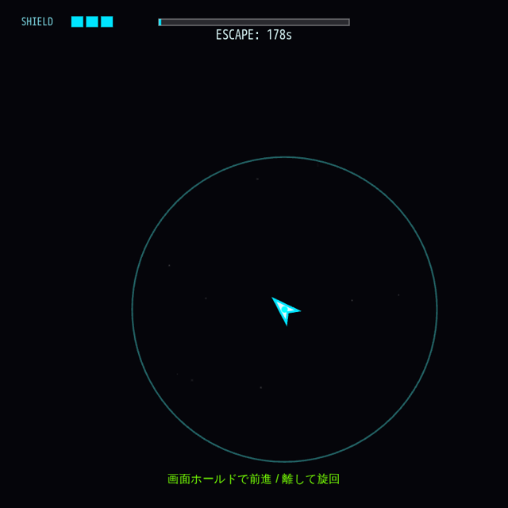
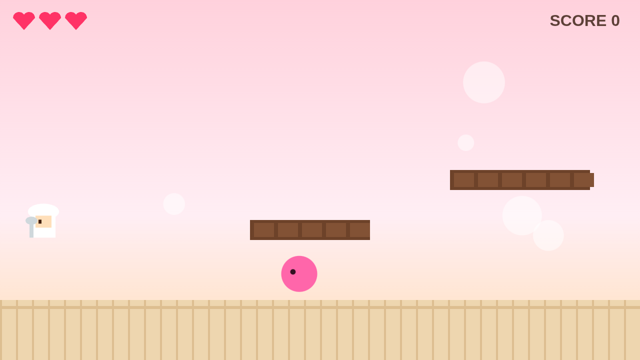

同じお題（比較モードでは同じ企画）を各モデルが実装した結果です。AI評価は全モデル共通の審査役が採点しています。 緑の数字は各列でいちばん良い値です。
| モデル | 試行 | 成功 | 成功率 | 一発合格 | 平均修正回数 | AI評価(5点) | 1本の費用 | 成功1本あたり | 1本の時間 | コード量(文字) |
|---|---|---|---|---|---|---|---|---|---|---|
| Gemini 3.8 Flash gemini-flash ・ gemini-3.8-flash | 5 | 5 | 100% | 80% | 0.2 | 4.0 | $0.046 | $0.046 | 1.7分 | 17,157 |
| ローカルLLM local-llm ・ local-llm | 5 | 5 | 100% | 100% | 0.0 | 4.0 | $0.010 | $0.010 | 6.3分 | 22,726 |
共通の企画づくりにかかった費用（上の表には含まない）: $0.041
| お題 | Gemini 3.8 Flash | ローカルLLM |
|---|---|---|
| ギアキャット3D 20261125-143105 3Dシューティングなしタップ/スワイプ同じ企画で実装 |  ★★★★ 修正1回 ・ $0.077 ・ 2.5分 |  ★★★★ 修正0回 ・ $0.013 ・ 7.5分 |
| とびねこチェイン 20261125-141835 3Dアクション連鎖・コンボで大きく得点タップ/スワイプ同じ企画で実装 |  ★★★★ 修正0回 ・ $0.036 ・ 79秒 |  ★★★★ 修正0回 ・ $0.009 ・ 6.1分 |
| カガミオトシ 20261125-131720 縦スクロール落ちモノパズル影や鏡のもう一人タップ/スワイプ同じ企画で実装 |  ★★★★ 修正0回 ・ $0.039 ・ 2.2分 |  ★★★★ 修正0回 ・ $0.010 ・ 7.2分 |
| クラヤミビーコン 20261124-151819 全方向アクション周囲しか見えない暗闇ワンボタン同じ企画で実装 |  ★★★★ 修正0回 ・ $0.032 ・ 68秒 | クラヤミビーコン （一覧から削除済み） |
| マカロンスプリット 20261124-151033 横スクロールアクション倒すと分裂する仮想パッド同じ企画で実装 |  ★★★★ 修正0回 ・ $0.044 ・ 1.5分 | マカロンスプリット （一覧から削除済み） |
比較モードで、最初に書いたコードが自動テストで引っかかった回数（種類別）。
| 問題の種類 | Gemini 3.8 Flash | ローカルLLM |
|---|---|---|
| プレイ中のエラー | 1 |
| モデル | 試行 | 成功 | 成功率 | 一発合格 | 平均修正回数 | AI評価(5点) | 1本の費用 | 成功1本あたり | 1本の時間 | コード量(文字) |
|---|---|---|---|---|---|---|---|---|---|---|
| Gemini 3.8 Flash gemini-flash ・ gemini-3.8-flash | 32 | 20 | 62% | 56% | 0.1 | 4.0 | $0.030 | $0.047 | 4.1分 | 16,825 |
| ローカルLLM local-llm ・ local-llm | 31 | 30 | 97% | 81% | 0.3 | 3.8 | $0.002 | $0.002 | 12.3分 | 21,746 |